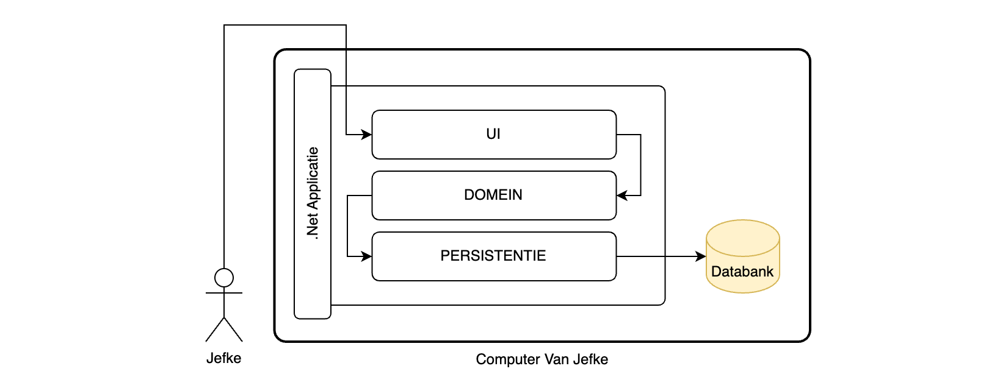
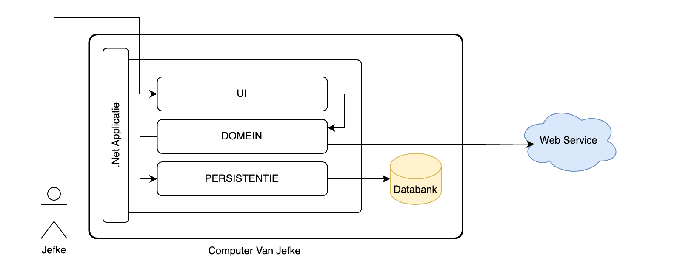
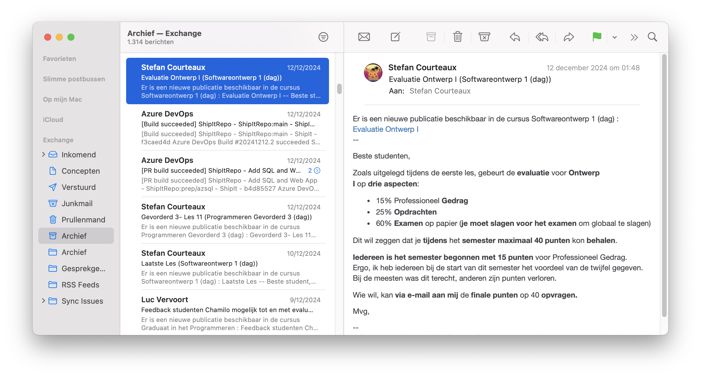
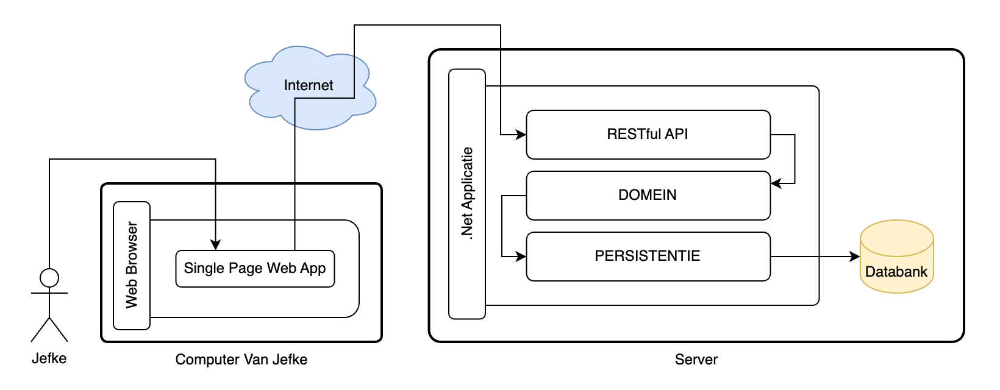
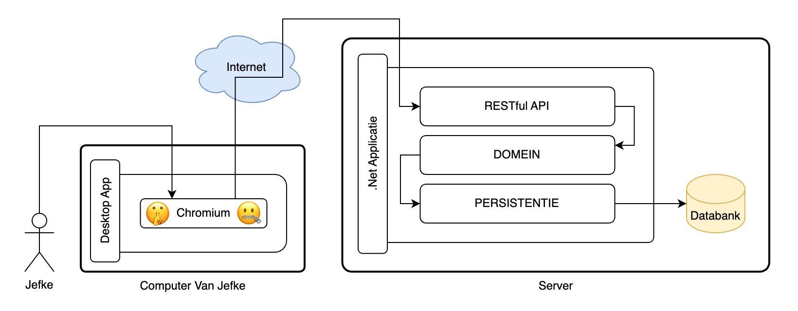
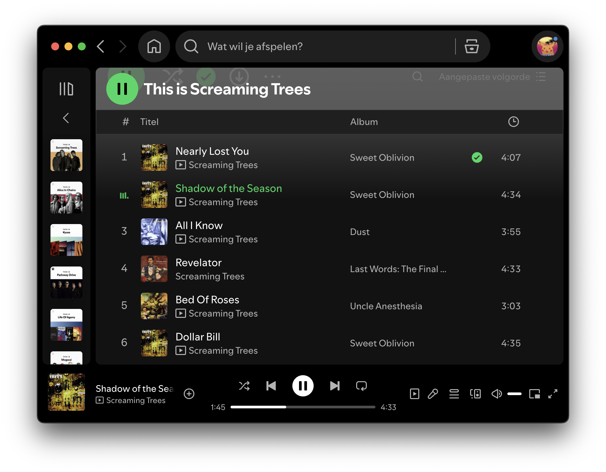

Situering
Klassieke Desktop Applicatie
Een klassieke desktop applicatie, zoals we deze kennen uit "Programmeren Gevorderd", kan bestaan uit meerdere lagen en een databank, maar uiteindelijk betreft het een monolithisch geheel dat zich volledig bevindt op de computer van de gebruiker. Historisch zijn dit veelal offline applicaties.
| Denk aan technologieën zoals WPF, .Net, SQL Express en ADO.Net. |

Hoewel eerder ouderwets van insteek, zijn er nog steeds geldige redenen om self-contained monolithische offline applicaties te bouwen. Denk bijvoorbeeld aan toepassingen in kerncentrales of fabrieken die met gevaarlijke stoffen werken. Door een volledig offline systeem te ontwerpen elimineer je een hele waaier aan risico’s.
Klassieke Desktop Applicatie Met Internet
Door de opkomst en algemene ingebruikname van internet is men online functionaliteit in applicaties gaan integreren.
| Denk aan technologieën zoals MAUI, .Net, MongoDB en Entity Framework Core. |

Maak niet onmiddellijk de sprong naar applicaties die continu met internet verbonden zijn. Een traditionele e-mail client hoeft bijvoorbeeld enkel online te zijn om e-mails te ontvangen en te versturen. Consulteren van reeds gedownloade e-mails en het opstellen van nieuwe berichten kan volledig offline gebeuren.

Niet enkel e-mail, maar de meeste lokaal geïnstalleerde traditionele kantoorsoftware kadert in deze context. Microsoft Word en PowerPoint zijn hier ook prima voorbeelden van. Ze kunnen veelal offline gebruikt worden, maar vereisen internet voor bepaalde functionaliteit. Deze applicatiearchitectuur kunnen we zeker (nog) niet als verouderd beschouwen.
Moderne Single Page Web App
Het gros van de moderne applicaties wordt ontwikkeld met een web first insteek en bijgevolg aangeboden als Single Page Web App. In eerste instantie is de applicatie niet aanwezig op de computer van de gebruiker. De applicatie wordt benaderd door met een web browser naar een afgesproken url te navigeren, zoals bijvoorbeeld outlook.office.com. De browser zal de nodige static files downloaden en de code daarin vervat uitvoeren.
In zo’n architectuur staat de User Interface los van de rest van de applicatie. Er is een expliciet onderscheid tussen de front-end applicatie, die uitgevoerd wordt op het systeem van de gebruiker, en de back-end applicatie, die uitgevoerd wordt op een server.
| Denk aan technologieën zoals React ("Web 3"), .Net, SQL Server en Entity Framework Core. |

De frontend zal met de backend communiceren over HTTP, veelal gebruikmakende van een RESTful Api. Dit soort applicaties zal doorgaans niet, of slechts in beperkte mate, offline functioneren.
Denk aan voorbeelden zoals
|
Deze cursus is een static site, geen web app. Alle pagina’s werden vooraf gegenereerd. Op dit moment wordt er in jouw browser geen logica uitgevoerd die een notie heeft van herbruikte elementen zoals de menubalk. De menubalk is effectief in de broncode van elke pagina aanwezig. Ook wordt elke link gewoon door de browser gevolgd, niet onderschept door routing logica in javascript. Stefan is dus een gek die alles continu in het rond zit te copy-pasten? Natuurlijk niet. |
Worden Er Nog Desktop Apps Gebouwd?
Ja, er worden absoluut nog desktop apps gebouwd. Dit gebeurt in een spectrum van technologieën. Deze variëren sterk in aspecten zoals platform(on)afhankelijkheid en performance.
Web Tech Op Desktop
Veel moderne desktop apps steunen in werkelijkheid sterk op intelligent verpakte web app technologie. Kort door de bocht wordt Chromium gebruikt om de app te renderen.

Het voordeel van deze aanpak is dat
-
deze apps inherent zeer weinig platformspecifieke code bevatten.
-
het meestal eenvoudig is dezelfde app als desktop- én webapp aan te bieden.
Een bedrijf hoeft de app dus, grofweg, maar één keer te bouwen en kan daarmee alle klanten op web, desktop en - jawel - smartphone ("Mobile") bedienen.
| Geen voordeel zonder nadeel. De prijs wordt betaald onder de vorm van suboptimaal gebruik van de hardware van de klant. Je kan rekenen op hoog CPU en RAM-gebruik. |

Voorbeelden van Electron desktop apps zijn Discord, Docker Desktop, GitHub Desktop, Microsoft Teams, Postman en Visual Studio Code.
Voorbeelden van CEF desktop apps zijn GOG Galaxy, Steam en Spotify.
"Echte" Desktop Apps
Echte desktop apps, die niet steunen op verpakte web frontend tech, worden ook nog gebouwd. Deze zijn performanter en doorgaans niet onderhevig aan de designbeperkingen van mobile-first responsive layouts.
Voorbeelden van kleine en grote apps zijn Windows Calculator, DaVinci Resolve, Logic Pro en Visual Studio 2022.
Web Api’s Zijn Overal
Ongeacht de details van de gebruikte frontend of backend technologie, zal in moderne web-connected applicatiearchitectuur communicatie met de backend nagenoeg altijd over een web api verlopen.
Er zijn ook tal van api’s die deze technologieën gebruiken, maar strikt genomen niet aan alle voorwaarden voldoen om RESTful genoemd te worden. We zullen deze gewoon web api’s noemen.
Gezien (RESTful) web api’s omnipresent zijn, is het belangrijk voor de moderne developer om dit onderwerp goed te beheersen.
- Ontwerp
-
Organisatie, paden en contracten van de api.
- Implementatie
-
Concrete oplevering van het ontwerp in dotnet.
Enkele interessante api’s:
Precisering Van Het Doel
De backend verantwoordelijk voor het runnen van een api kan een hoge graad van architecturale complexiteit kennen.
-
Programmeren Gevorderd 2 behandelt implementatiedetails van een enkelvoudige backend.
-
Programmeren Gevorderd 3 behandelt de architecturale complexiteit van een cloud-hosted backend met meerdere services en de basisintegratie van een zeer eenvoudige frontend.
-
Web 3 behandelt het bouwen van een volwaardige moderne Single Page Web App, met nadruk op de frontend.